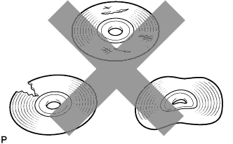

СИСТЕМА НАВИГАЦИИ (для моделей с DVD) > Невозможно вставить диск с картами |
| 1.ПРОВЕРЬТЕ ДИСПЛЕЙ МОДУЛЯ СИСТЕМЫ НАВИГАЦИИ И ИНДИКАЦИИ |
Нажмите кнопку "INFO TEL" (информация), а затем выберите "Map Data" (картографические данные).
Проверьте, вставлен ли диск в слот для загрузки диска с картой.
Проверьте, отображается ли рядом с "Map Data" версия картографических данных.
|
| ||||
| OK | |
| 2.ПРОВЕРЬТЕ ДИСК С КАРТОЙ |
|  |
Убедитесь в том, что диск с картами не деформирован и не треснут.
|
| ||||
| OK | ||
| ||